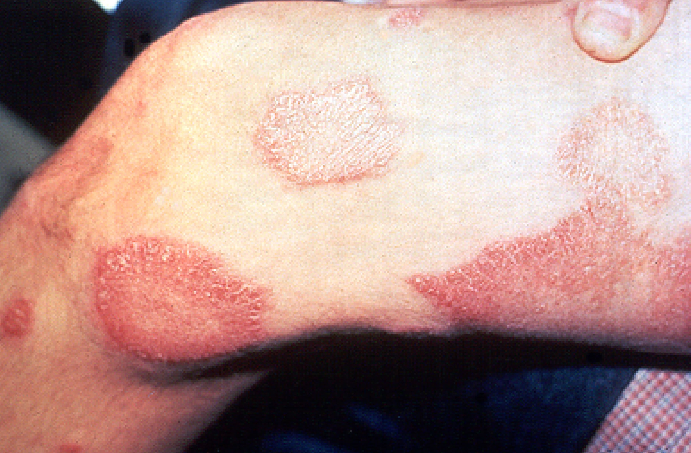

Información general sobre la lepra
Imagen
Descripción
La lepra, también conocida como enfermedad de Hansen, es una enfermedad infecciosa crónica causada por la bacteria Mycobacterium leprae. Afecta principalmente la piel, los nervios periféricos, la mucosa de las vías respiratorias superiores y los ojos. Su evolución es lenta y puede provocar discapacidades físicas si no se trata a tiempo.
Causas
- Transmisión por gotas respiratorias de personas infectadas no tratadas
- Contacto prolongado y cercano con personas enfermas
- No se transmite por contacto casual ni por objetos compartidos
Síntomas
Los síntomas pueden tardar años en aparecer y evolucionan lentamente:
- Lesiones en la piel con pérdida de sensibilidad
- Manchas claras u oscuras que no duelen ni pican
- Debilidad muscular, especialmente en extremidades
- Engrosamiento de nervios periféricos
- Deformidades físicas si no se trata
Tratamiento
Aunque la lepra puede causar daño permanente si no se trata, el tratamiento busca eliminar la infección, prevenir complicaciones y evitar la transmisión:
- Antibióticos específicos (rifampicina, dapsona, clofazimina) durante varios meses
- Control médico regular
- Cuidados de la piel y prevención de lesiones
- Fisioterapia y cirugía reconstructiva en casos avanzados